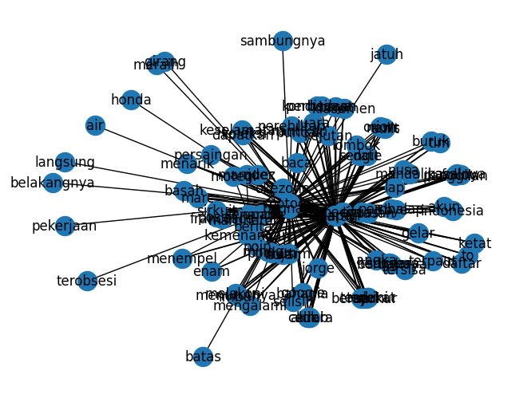

Ekstraksi Kata Kunci pada dokumen#
import pandas as pd
import numpy as np
from itertools import combinations
import networkx as nx
import matplotlib.pyplot as plt
data = pd.read_csv("/content/drive/MyDrive/ppw/tugas/data_tugas4/data_label_news.csv")
data
| Date | Title | Content | Label | |
|---|---|---|---|---|
| 0 | 01-10-2023 | Asapi Francesco Bagn... | ASAPI Francesco Bagnaia di MotoGP Jepang 2023,... | Sport |
| 1 | 01-10-2023 | Permintaan Maaf Eko ... | EKO Yuli Irawan mengucapkan permintaan maafnya... | Sport |
| 2 | 01-10-2023 | MotoGP Jepang 2023: ... | MOTEGI - Marc Marquez girang setelah bisa naik... | Sport |
| 3 | 01-10-2023 | Klasemen Sementara P... | KLASEMEN sementara perolehan medali Asian Game... | Sport |
| 4 | 01-10-2023 | Hasil Asian Games 20... | HASIL Asian Games 2023 akan dibahas di sini. T... | Sport |
| ... | ... | ... | ... | ... |
| 987 | 01-11-2023 | Segini Besaran Uang Makan dan Uang Lauk Pauk P... | JAKARTA - Segini besaran uang makan dan uang l... | Politik |
| 988 | 01-11-2023 | Aturan RPP Kesehatan Bakal Picu Peredaran Roko... | JAKARTA – Aturan Rancangan Peraturan Pemerinta... | Politik |
| 989 | 01-11-2023 | Mentan: Cukup Pakai KTP Petani Dapat Pupuk Sub... | JAKARTA - Menteri Pertanian Amran Sulaiman men... | Politik |
| 990 | 01-11-2023 | Ganjar Ingin Masyarakat Rasakan Dampak Langsun... | JAKARTA - Calon Presiden Partai Perindo Ganjar... | Politik |
| 991 | 01-11-2023 | Mengintip Harta Karun Migas di Jabanusa, Bisa ... | JAKARTA - SKK Migas menyatakan potensi harta k... | Politik |
992 rows × 4 columns
Pre Processing#
import nltk
import pandas as pd
from sklearn.feature_extraction.text import CountVectorizer
import numpy as np
import re
import networkx as nx
from nltk.tokenize import word_tokenize
from nltk.corpus import stopwords
nltk.download('stopwords')
nltk.download('punkt')
[nltk_data] Downloading package stopwords to /root/nltk_data...
[nltk_data] Unzipping corpora/stopwords.zip.
[nltk_data] Downloading package punkt to /root/nltk_data...
[nltk_data] Unzipping tokenizers/punkt.zip.
True
Ambil satu data#
sampel = data.head(1)
sampel
| Date | Title | Content | Label | |
|---|---|---|---|---|
| 0 | 01-10-2023 | Asapi Francesco Bagn... | ASAPI Francesco Bagnaia di MotoGP Jepang 2023,... | Sport |
#Remove Puncutuation
clean_symbol = re.compile('[^a-zA-Z\s]')
def clean_punct(text):
text = clean_symbol.sub(' ', text).lower()
return text
# Buat kolom tambahan untuk data description yang telah diremovepunctuation
preprocessing = sampel['Content'].apply(clean_punct)
clean=pd.DataFrame(preprocessing)
clean
| Content | |
|---|---|
| 0 | asapi francesco bagnaia di motogp jepang ... |
Stopword#
# Unduh stop words dari nltk
stop_words = set(stopwords.words('indonesian'))
# Fungsi untuk menghapus stop words dari setiap kalimat
def remove_stopwords(sentence):
words = word_tokenize(sentence)
filtered_words = [word for word in words if word.lower() not in stop_words]
return ' '.join(filtered_words)
# Terapkan fungsi pada kolom 'Kalimat' dalam DataFrame
stopword = clean['Content'].apply(remove_stopwords)
df=pd.DataFrame(stopword)
df
| Content | |
|---|---|
| 0 | asapi francesco bagnaia motogp jepang jorge ma... |
Term Frequency#
# Menghitung matriks co-occurrence dengan CountVectorizer
vectorizer = CountVectorizer()
co_occurrence_matrix = vectorizer.fit_transform(df['Content']).T * vectorizer.fit_transform(df['Content'])
# Membuat DataFrame dari matriks co-occurrence
df_co_occurrence = pd.DataFrame(co_occurrence_matrix.toarray(), columns=vectorizer.get_feature_names_out(),index=vectorizer.get_feature_names_out())
df_co_occurrence
| air | akrab | akun | ancaman | angka | apapun | asapi | baca | bagnaia | bahagia | ... | terpaksa | terpaut | tersisa | tim | to | up | urutan | utama | valentino | wib | |
|---|---|---|---|---|---|---|---|---|---|---|---|---|---|---|---|---|---|---|---|---|---|
| air | 64 | 72 | 72 | 48 | 72 | 56 | 8 | 112 | 400 | 72 | ... | 40 | 72 | 72 | 72 | 72 | 72 | 56 | 8 | 48 | 8 |
| akrab | 72 | 81 | 81 | 54 | 81 | 63 | 9 | 126 | 450 | 81 | ... | 45 | 81 | 81 | 81 | 81 | 81 | 63 | 9 | 54 | 9 |
| akun | 72 | 81 | 81 | 54 | 81 | 63 | 9 | 126 | 450 | 81 | ... | 45 | 81 | 81 | 81 | 81 | 81 | 63 | 9 | 54 | 9 |
| ancaman | 48 | 54 | 54 | 36 | 54 | 42 | 6 | 84 | 300 | 54 | ... | 30 | 54 | 54 | 54 | 54 | 54 | 42 | 6 | 36 | 6 |
| angka | 72 | 81 | 81 | 54 | 81 | 63 | 9 | 126 | 450 | 81 | ... | 45 | 81 | 81 | 81 | 81 | 81 | 63 | 9 | 54 | 9 |
| ... | ... | ... | ... | ... | ... | ... | ... | ... | ... | ... | ... | ... | ... | ... | ... | ... | ... | ... | ... | ... | ... |
| up | 72 | 81 | 81 | 54 | 81 | 63 | 9 | 126 | 450 | 81 | ... | 45 | 81 | 81 | 81 | 81 | 81 | 63 | 9 | 54 | 9 |
| urutan | 56 | 63 | 63 | 42 | 63 | 49 | 7 | 98 | 350 | 63 | ... | 35 | 63 | 63 | 63 | 63 | 63 | 49 | 7 | 42 | 7 |
| utama | 8 | 9 | 9 | 6 | 9 | 7 | 1 | 14 | 50 | 9 | ... | 5 | 9 | 9 | 9 | 9 | 9 | 7 | 1 | 6 | 1 |
| valentino | 48 | 54 | 54 | 36 | 54 | 42 | 6 | 84 | 300 | 54 | ... | 30 | 54 | 54 | 54 | 54 | 54 | 42 | 6 | 36 | 6 |
| wib | 8 | 9 | 9 | 6 | 9 | 7 | 1 | 14 | 50 | 9 | ... | 5 | 9 | 9 | 9 | 9 | 9 | 7 | 1 | 6 | 1 |
150 rows × 150 columns
Graph#
G = nx.Graph()
for idx, row in df_co_occurrence.iterrows():
for col in df_co_occurrence.columns:
weight = df_co_occurrence.loc[idx, col]
if weight > 450 and idx != col:
G.add_edge(idx, col, weight=weight)
pr = nx.pagerank(G)
sorted_d = sorted(pr.items(), key=lambda x: x[1], reverse=True)[:3]
sorted_d
[('motogp', 0.16523682786251118),
('martin', 0.12586318739833485),
('balapan', 0.115190145068991)]
nx.draw(G,with_labels=True)
